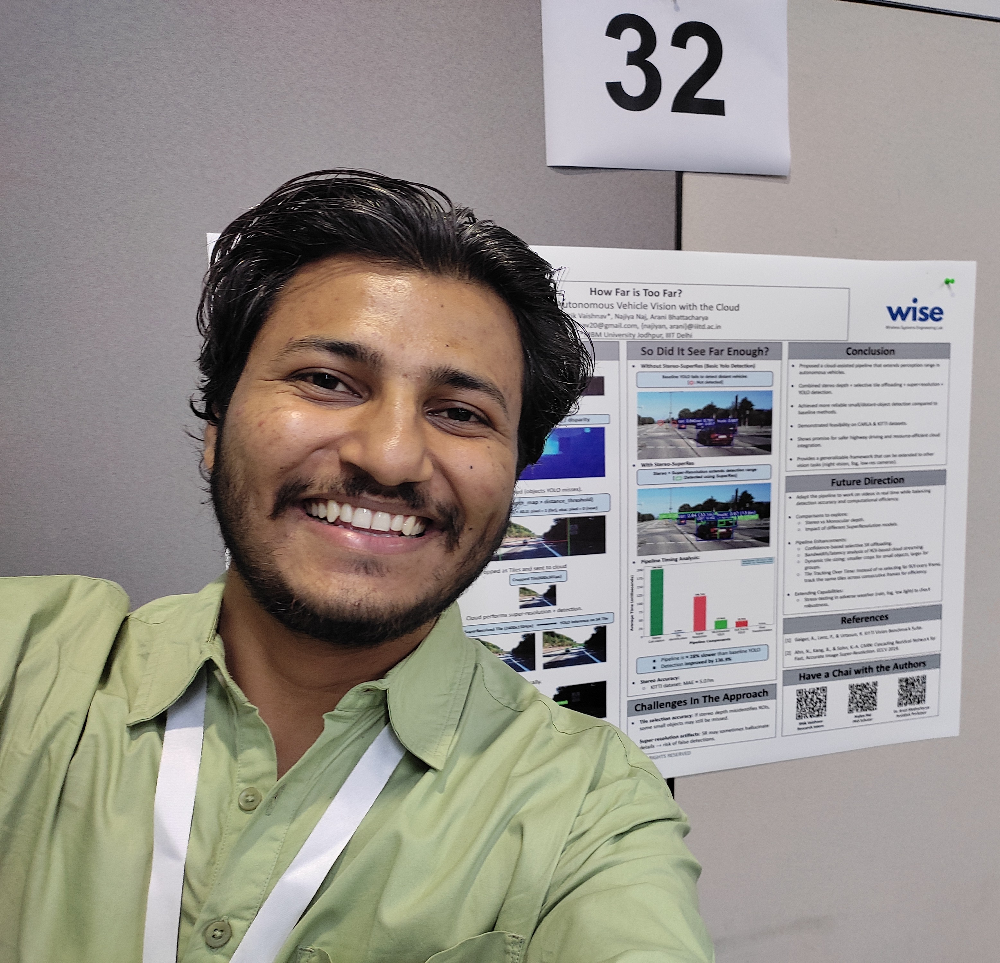

Namaste Ji, I'm Ritik
I'm currently exploring research opportunities in autonomous systems and edge computing. Previously I worked as an undergrad researcher under Dr. Arani Bhattacharya at the amazing WISE Lab IIITD on enhancing the perception capabilities and teleoperation of autonomous vehicles.
I like hardware, filmmaking, travelling, music, and a slow life (did i say mountains or vast grasslands?).

Research
How Far is Too Far? Fixing Vision of Autonomous Vehicles Using Selective Super-Resolution
MINDS@COMSNETS 2026 • Best Paper Award
We propose a stereo-guided selective super-resolution framework for scalable long-range perception in autonomous vehicles. Using stereo depth, our system identifies distant regions of interest and selectively enhances them before detection, improving far-object visibility while maintaining real-time efficiency. Evaluations on CARLA and KITTI show up to 35% improvement in far-object detection beyond 100 m with 3× lower super-resolution latency, paving the way for scalable and efficient AV perception.
Contact
always up for a good cup of chai talktoritikv@gmail.com